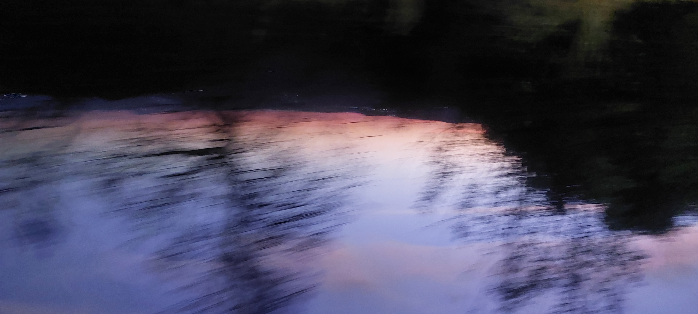

Ivre amour
Buvons,
puisque l’amour
Ne connaît pas
d’autre mesure,
Buvons
sans chercher le jour
Au fond
de nos blessures.
Je te parles d’absinthe,
De nuits qui brûlent
Et de cœurs
qui sombrent
Dans les eaux froides
des mots.
Mais moi,
Je n’ai nul besoin
d’alcool
Pour perdre
la raison.
Ton regard suffit.
Lorsque j’entends
ce « je t’aime »
Qui traverse mes veines
Comme une lumière ivre
Il renverse en moi
Tout ce que je croyais solide.
Je suis un bateau ivre,
Tu es,
La mer
où je dérives,
Celle
qui ne demande pas
Où je vais,
Mais qui m’emporte
Encore
et encore.
Et si
nous devons sombrer,
Que ce soit ensemble,
Loin des quais,
Loin des hommes
raisonnables,
Loin de ceux
qui savent aimer
Sans jamais
se perdre.
Je veux cette folie-là.
Celle
qui fait trembler les mains,
Celle
qui met du vertige
Dans les silences,
Celle
qui transforme
un simple baiser
En éternité.
A certains leurs pluies,
A d’autres leurs enfers,
Leurs alcools,
leurs blessures,
Leurs voyelles en feu.
Nous,
Nous aurons
nos propres tempêtes.
Nous écrirons
avec nos corps
Ce qu’aucun poème
N’osera dire.
Et lorsque viendra le matin,
Si l’absinthe s’évapore,
Si les violons se taisent,
Si les fantômes regagnent
Les eaux noires du fleuve,
Il restera ton « je t’aime ».
Et le mien.
Deux mots seulement.
Mais assez puissants
Pour rendre jaloux
Tous les poètes morts.
Alors verse encore.
Pas dans le verre.
Dans mon cœur.
Que je m’enivre de toi
Jusqu’à ne plus savoir
Si je t’aime
Ou si je suis devenu
Le poème
Que ton amour
A bien voulu écrire.
Djamel Metref
At Yenni le 31 Août 2026
← Tous les poèmes